Research
Research program
Freshwater invasions rarely happen in isolation. In Oregon rivers, non-native Smallmouth Bass (Micropterus dolomieu) interact with both native Signal Crayfish (Pacifastacus leniusculus) and the expanding non-native Ringed Crayfish (Faxonius neglectus). My dissertation examines these interactions across three linked studies — from diet patterns and prey availability in the field, to predator–prey mechanisms in the laboratory, to how temperature shapes competition between the two crayfish species.
The question running through all three chapters: can interactions among non-native species alter the course of a biological invasion, and what does that mean for the native species caught between them?
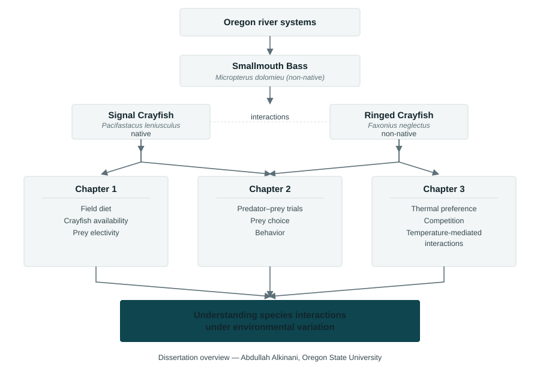
Study species
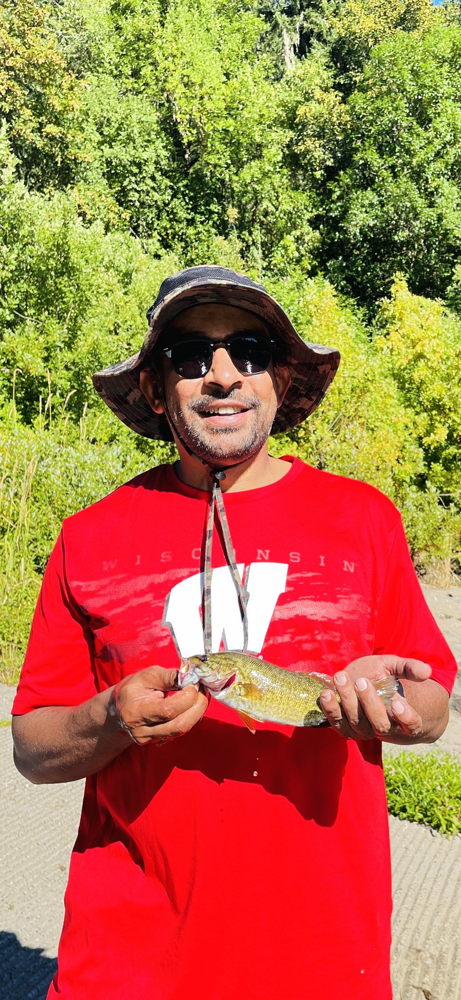
Smallmouth Bass
Micropterus dolomieu
Non-native predator established in the Willamette and Umpqua Rivers, and the focal fish species in the diet and predator–prey research (Chapters 1–2).
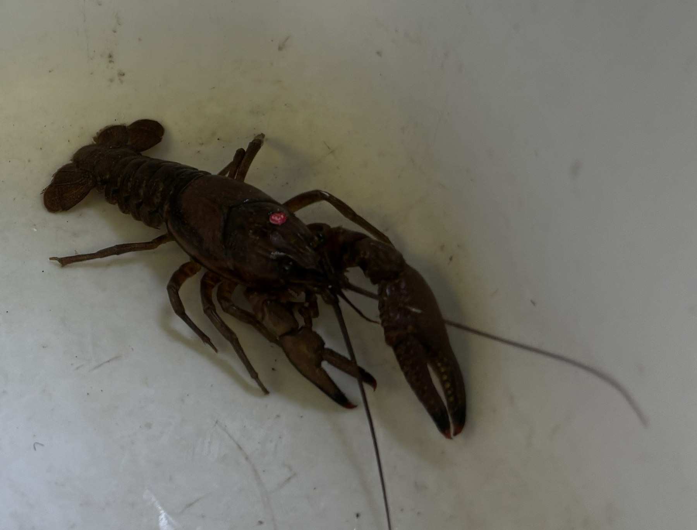
Signal Crayfish
Pacifastacus leniusculus
Native crayfish of the Pacific Northwest, and the native prey and competitor species examined throughout the dissertation.
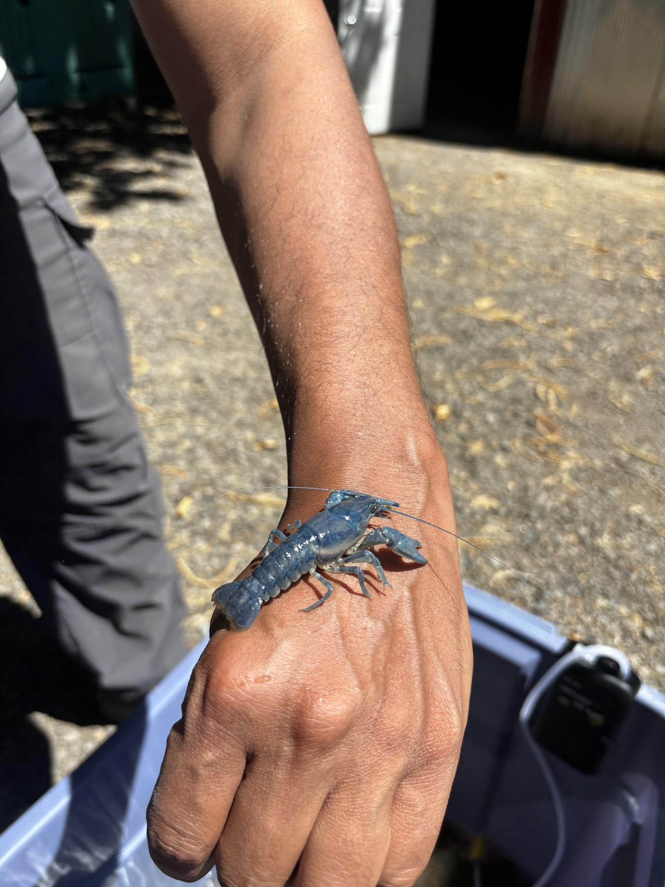
Ringed Crayfish
Faxonius neglectus
Non-native crayfish expanding into Oregon’s Umpqua and Rogue basins, and the focal invader in the predator–prey and competition experiments (Chapters 2–3). This individual shows unusual blue coloration, occasionally observed in this species.
Dissertation chapters
Chapter 1
Trophic ecology of Smallmouth Bass in two Oregon rivers
Research questions.
- How important are crayfish, relative to fish and invertebrates, in Smallmouth Bass diets in the Willamette and Umpqua Rivers, and does that pattern change across years?
- In the Umpqua River, where Signal and Ringed Crayfish co-occur, does Smallmouth Bass show species-specific electivity when diet is compared with local crayfish availability?
- How variable is diet composition among years within each river?
Approach. Diet samples come from the Willamette River Fish Decadal Assessment and the annual Umpqua Bass Bash, paired with a standardized capture–mark–recapture crayfish availability study across five Umpqua sites, sampled over four days each. Comparing stomach contents with local prey availability will allow me to calculate Jacobs’ electivity index (D) and test whether Smallmouth Bass select for Ringed over Signal Crayfish rather than simply consuming whichever is more available. Stomach samples have been collected across the 2023–2026 field seasons; species-level processing of those samples is ongoing.
Study area. The Willamette and Umpqua River basins, Oregon — two systems that differ in geomorphology, thermal regime, and crayfish assemblage, providing a natural contrast for these comparisons.
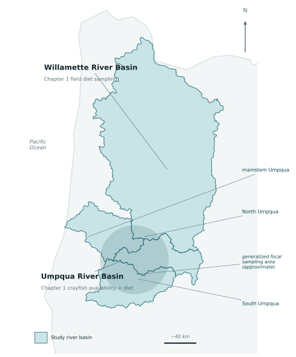
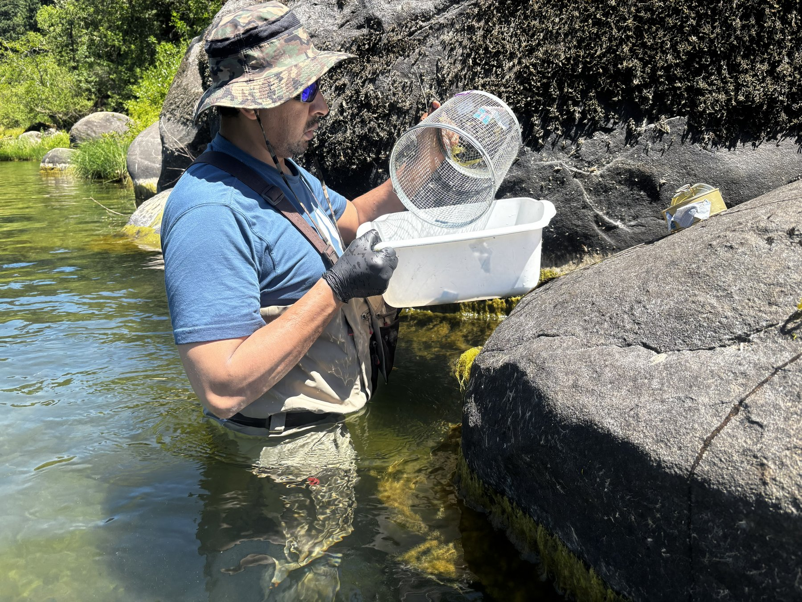
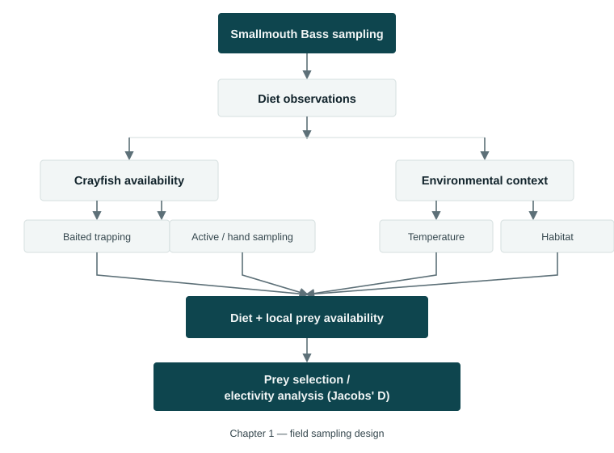
Chapter 2
Laboratory predator–prey trials: Smallmouth Bass and crayfish
When a Smallmouth Bass is offered one Signal Crayfish and one Ringed Crayfish at matched size, which prey (if either) is consumed first, and how consistent is that outcome across individuals?
Experimental design (current protocol). Each Smallmouth Bass is held in its own opaque tank and pre-conditioned there overnight (about 12 hours) before a trial. One Signal Crayfish and one Ringed Crayfish, size-matched by carapace length, are then introduced together, and the encounter is video-recorded for a standardized observation period under low, standardized lighting with disturbance minimized (visual barriers, remote camera control). Up to six fish are run in parallel across six independent tanks each morning. Individual bass are tracked across repeated standardized trials with appropriate recovery intervals between trials.
Measurements. The primary outcome is which prey item, if either, is consumed first. Secondary behavioral metrics include approach, attack, aborted attacks, capture, latency, escape responses, defensive posture, and handling time, scored from video.
Temperature. The standardized protocol targets a stable working temperature; pilot testing has explored trial temperatures across roughly 16–25 °C while the protocol was being refined, rather than comparing fixed “warm” and “cool” treatments as a manipulated factor in this chapter.
Current status. Pilot-phase trials are underway to finalize the protocol; the full dataset under the standardized design has not yet been collected, and no prey-choice outcome should be treated as a result at this stage.
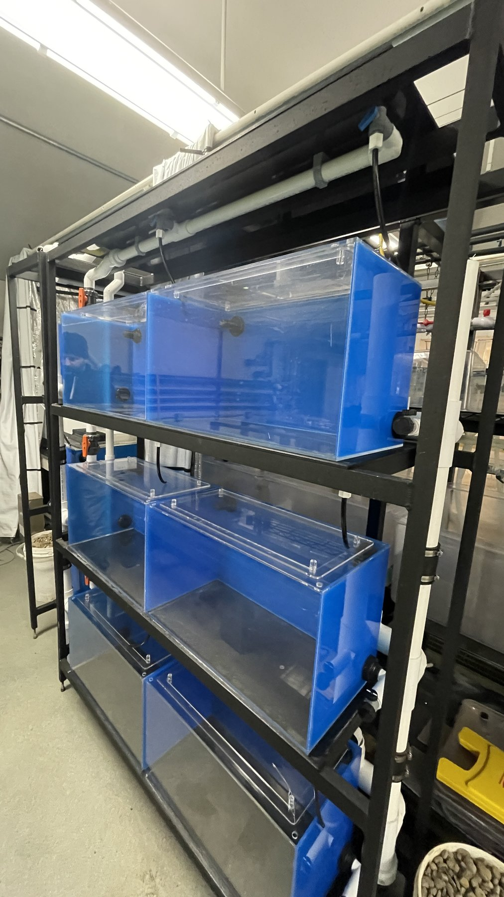
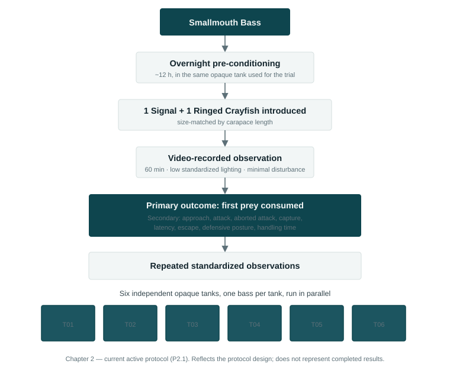
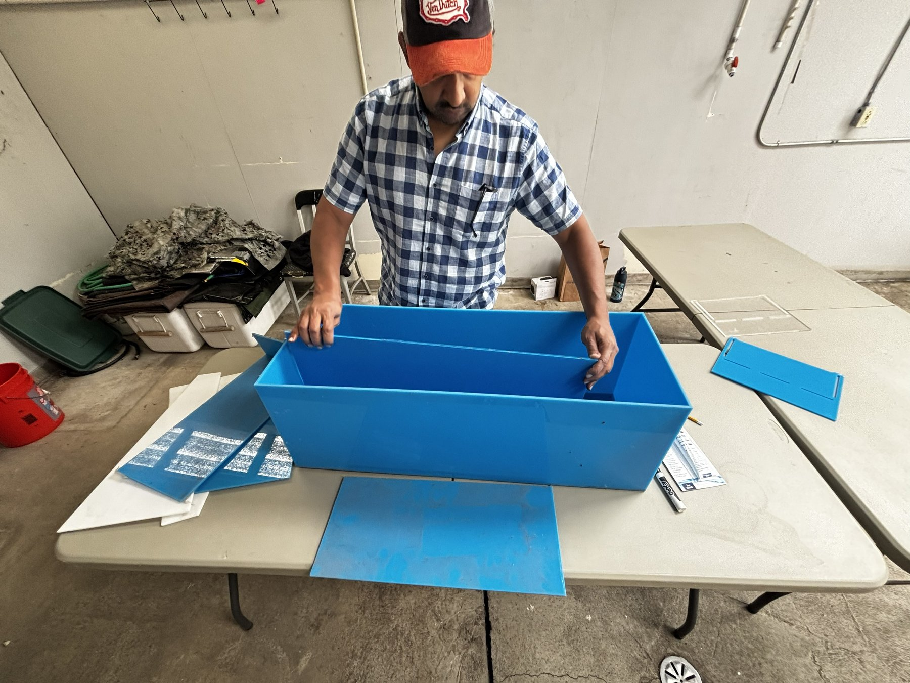
Once published, this chapter will carry: publication · dataset · R code · conference presentation · DOI.
Chapter 3
Thermal preference and shelter competition between native and non-native crayfish
Research questions.
- How does interspecific shelter competition between Signal and Ringed Crayfish vary with relative body size and sex?
- How does thermal context change activity levels, encounter rates, and the strength of competitive asymmetry between the two species?
- Does displacement from shelter measurably increase a crayfish’s behavioral exposure?
This chapter has two experimental components at different stages, plus a planned field component.
Thermal-choice pilot trials (active). Individual crayfish are placed in a two-channel tank with a warm channel, a cool channel, and a shared central junction. After a 3-minute acclimation period (not analyzed), a 20-minute recording period is scored for time spent in each zone, latency to first choice, and number of channel switches, examined across four 5-minute windows. This is designed as a short-term behavioral-response assay — it measures immediate zone choice after a controlled warm/cool input, not a long-term equilibrium preferred temperature. Each individual is tested once and then moved to a labeled recovery tank. Pilot thermal-choice trials are underway to refine the behavioral assay and analysis workflow before final analysis; this is pilot/protocol-testing data, not yet a basis for conclusions about species differences.
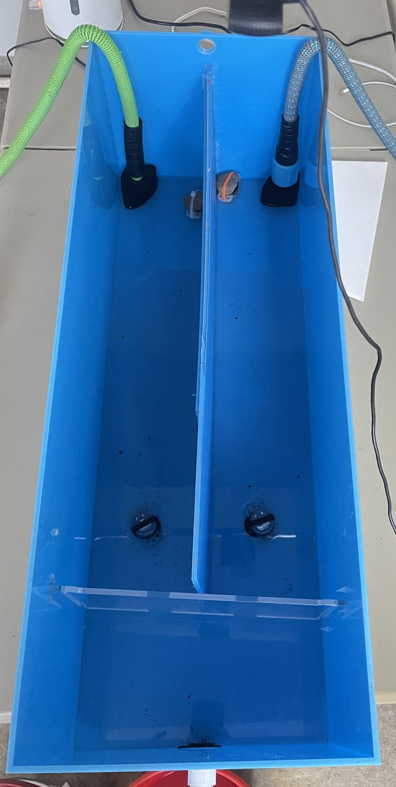
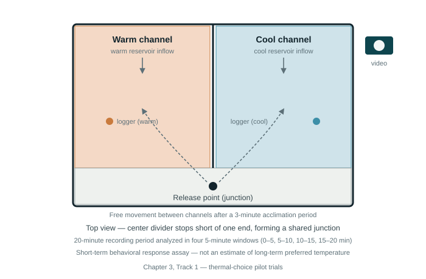
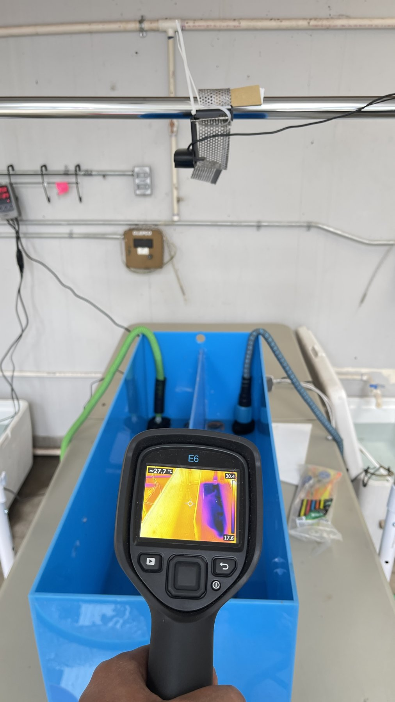
Shelter-competition experiment (planned, not yet started). The approved design crosses two temperatures (cool 17 °C, warm 23 °C) with two shelter levels — one refuge, forcing direct competition, versus two refuges — for size-matched Signal and Ringed Crayfish pairs, with 9 replicates per combination. Planned 60-minute video-recorded trials would record shelter dominance, aggression, and displacement, analyzed afterward with tools such as ToxTrac, Fiji/TrackMate, and DeepLabCut. As of this update, no trials have been run under this design.
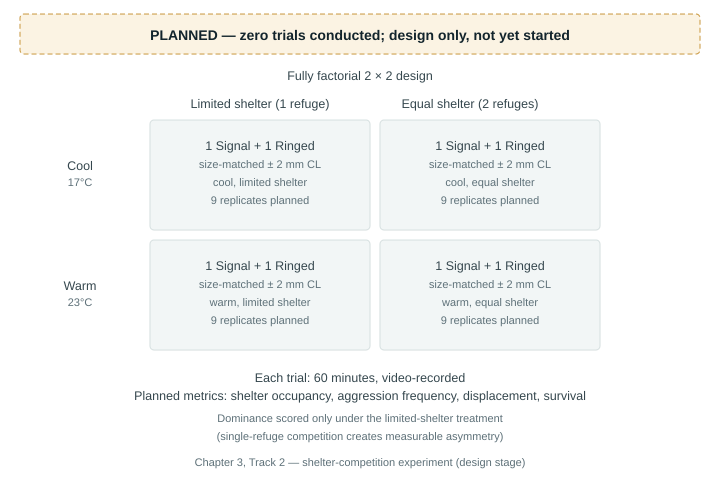
Field thermal context (planned, not yet conducted). The design would classify Umpqua Basin reaches into cold (≤18 °C), transitional (18–21 °C), and warm (≥21 °C) categories using a modeled stream-temperature dataset (Siegel et al. 2023), validated with in-situ loggers, then sample them with standardized baited traps to characterize crayfish coexistence. This basin-wide field sampling has not yet been carried out.
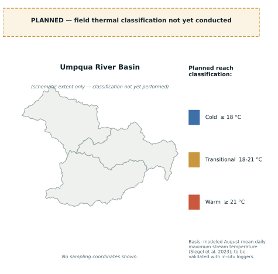
Methods and tools
| Area | Methods and tools |
|---|---|
| Field ecology | Smallmouth Bass diet sampling, crayfish trapping and hand sampling, habitat and substrate surveys |
| Environmental monitoring | Modeled stream temperature (Siegel et al. 2023), in-situ temperature loggers (HOBO/Hydromath) |
| Experimental ecology | Predator–prey trials (active pilot testing), thermal-choice trials (active pilot testing), shelter-competition trials (planned) |
| Behavioral ecology | Video recording; BORIS behavioral coding (thermal-choice trials); ToxTrac, Fiji/TrackMate, and DeepLabCut (planned, for the shelter-competition experiment) |
| Quantitative ecology | R, generalized and mixed-effects models, Jacobs’ electivity index |
| Reproducible science | Quarto, Git and GitHub, Zotero with Better BibTeX |
Field and lab gallery
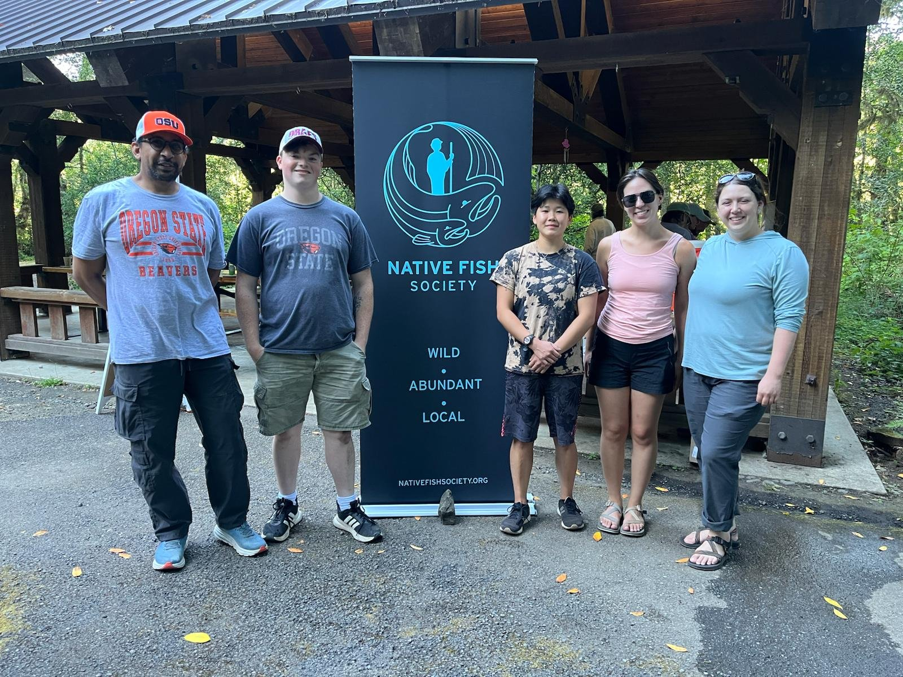
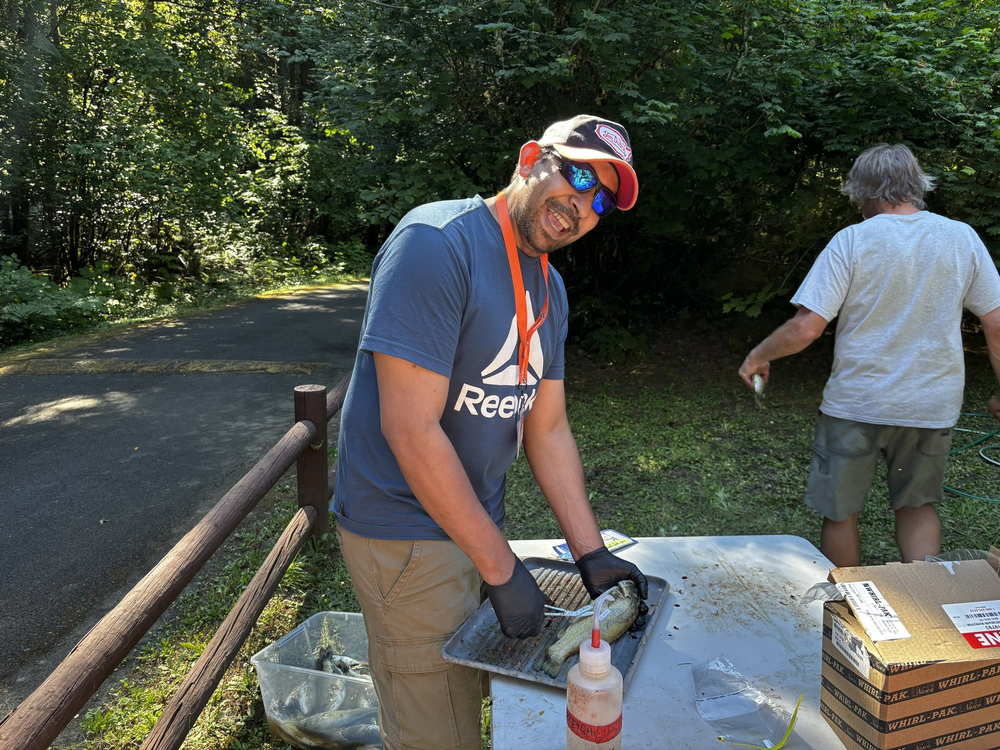
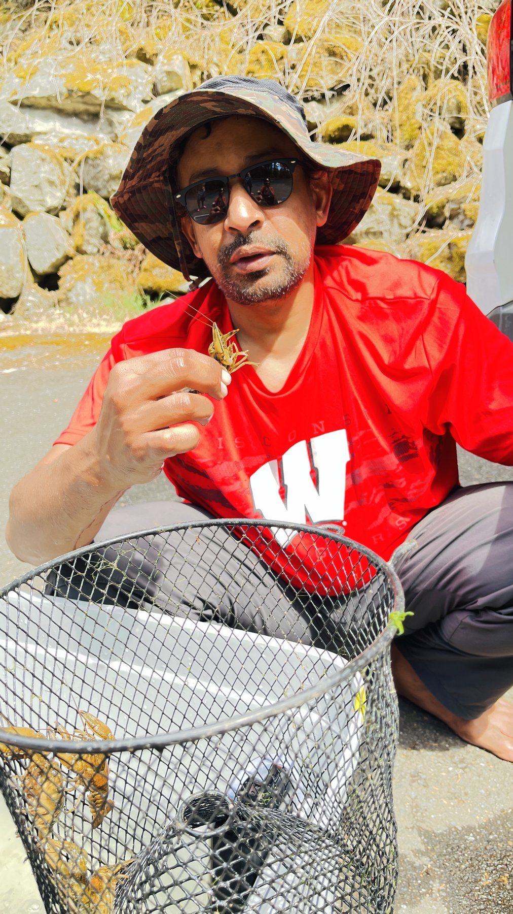
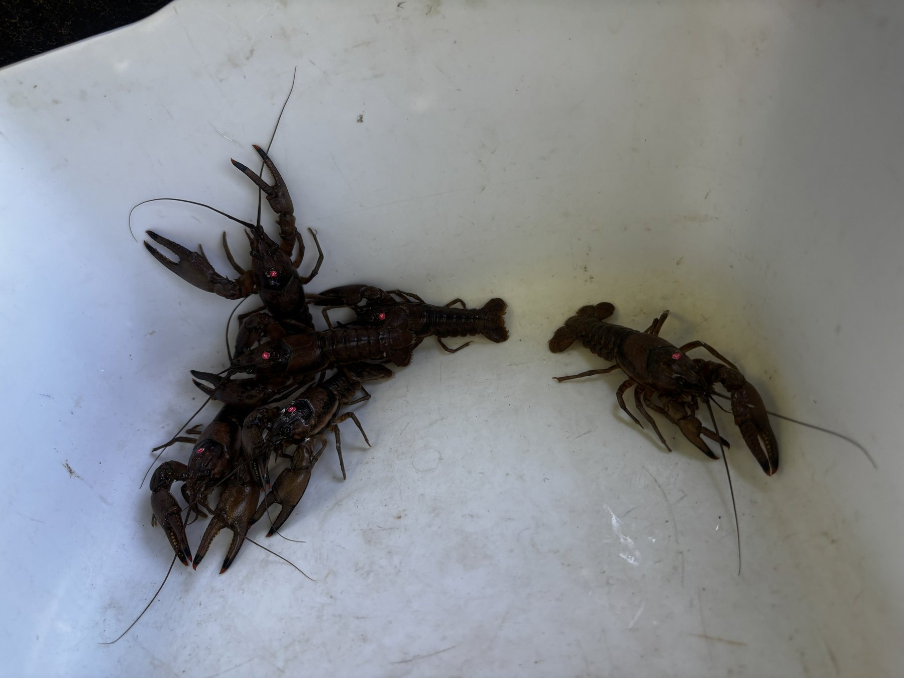
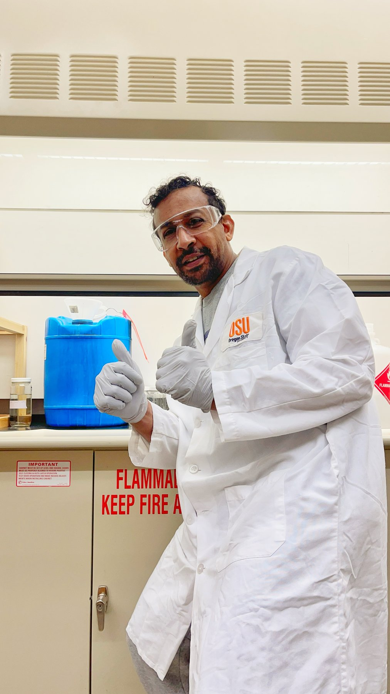